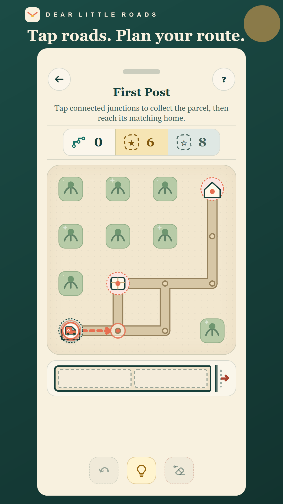
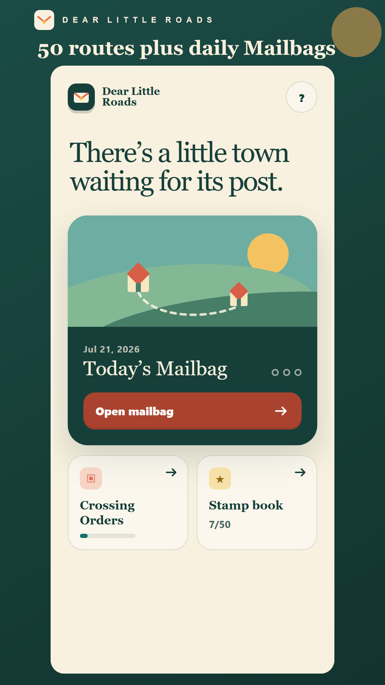
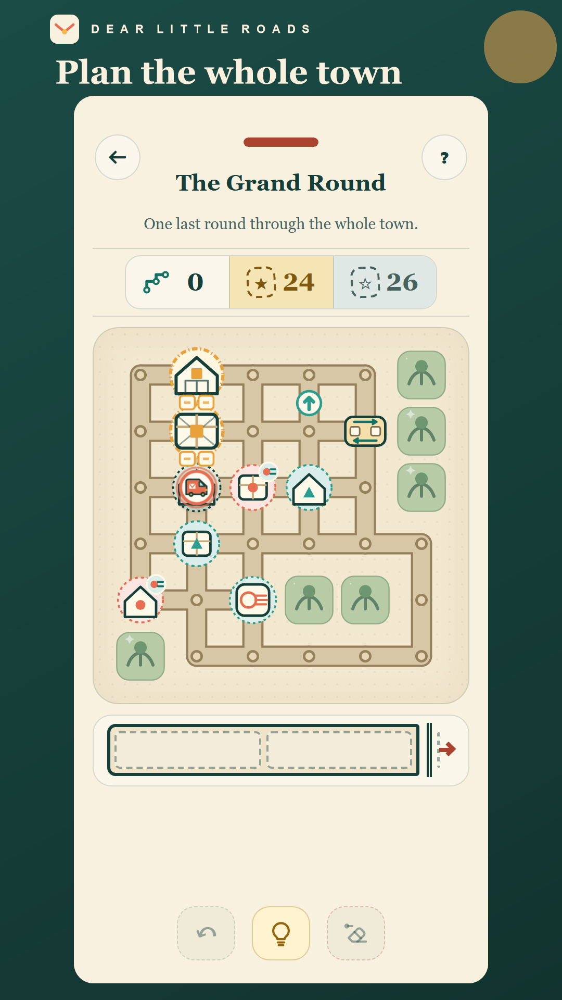
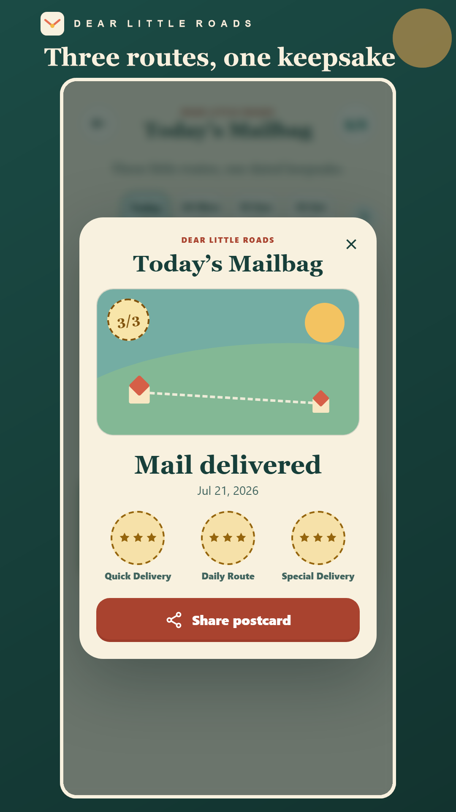

Plan
Trace short routes through tiny towns, one-way streets, Postmark counters, and Sorting Bays.
Plan compact delivery routes, load parcels in the right order, and earn Gold stamps.
Applications opening soon
The invitation-only test is free and unpaid. Applying will not guarantee a place. How application data will be used and deleted.





Trace short routes through tiny towns, one-way streets, Postmark counters, and Sorting Bays.
The last parcel loaded is the first one out. Bulky cargo and limited space turn driving into a logic puzzle.
Finish the route, inspect your solution, then replay for Gold and fill a 50-route stamp book.
When recruitment opens, participation will remain voluntary: testers may stop playing or uninstall at any time. The only platform request will be to remain opted into the Play test for 14 days; there will be no daily-play obligation.